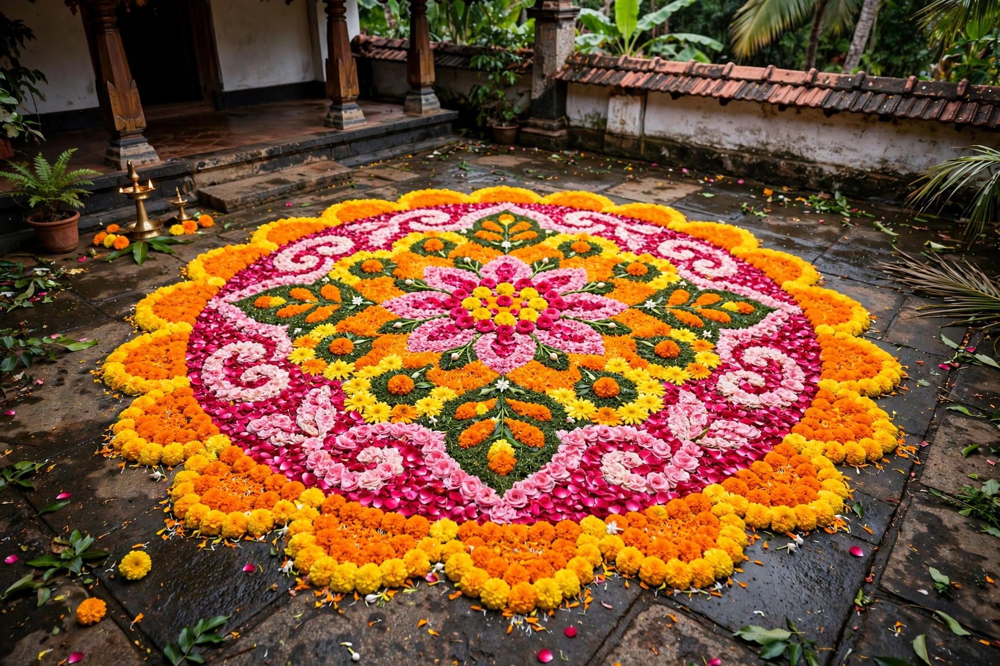

Onam
| Onam | |
| Observed by | Malayalis (people of Kerala and the Malayali diaspora) |
|---|---|
| Type | Harvest festival; Hindu festival |
| Significance | Return of the legendary King Mahabali; rice harvest |
| Date | Month of Chingam (August–September) in the Malayalam calendar |
| Duration | 10 days (culminating on Thiruvonam) |

Onam is an annual harvest and cultural festival celebrated predominantly by the people of Kerala in India and by the Malayali diaspora worldwide. It commemorates the return of the mythical daitya king Mahabali and the harvest season, and is the official festival of the state of Kerala.
Legend
According to legend, Mahabali, a generous and just asura king, was pushed into the netherworld (Sutala) by Vamana, an avatar of Vishnu, but was granted permission to return once a year to visit his people. Onam marks this homecoming, and Malayalis welcome the king with floral carpets (pookalam), feasts and new clothes.
Customs
The festival lasts ten days, beginning on Atham and culminating on Thiruvonam. Central customs include the Pookalam floral designs made fresh each morning, the Onasadya, a grand vegetarian banquet of many courses served on a banana leaf, snake-boat races (Vallamkali) such as the Aranmula and Nehru Trophy races, traditional dances such as Thiruvathira and Pulikali ("tiger play"), and the giving of new clothes (Onakkodi).
Cultural significance
Onam is celebrated by Malayalis across religious communities and is widely regarded as a symbol of Kerala's cultural identity, equality and prosperity, recalling the golden age of Mahabali's reign described in the popular Malayalam saying that during his rule "all men were equal".